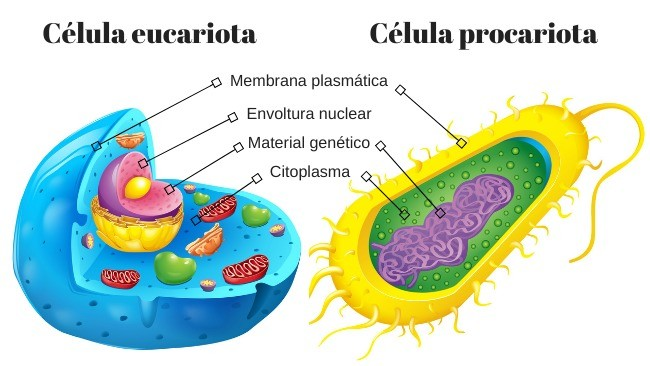

Definición:
La célula es la unidad básica, estructural y funcional de los seres vivos. Todos los organismos están formados por células, y en ellas se llevan a cabo procesos esenciales como la nutrición, la relación y la reproducción..

Tipos de célula:
Existen dos tipos principales de células: la célula procariota, que es más simple, no tiene núcleo definido y su material genético se encuentra libre en el citoplasma; y la célula eucariota, que es más compleja, cuenta con un núcleo definido y posee orgánulos que realizan funciones específicas.
Origen del término célula:
El término “célula” fue utilizado por primera vez por Robert Hooke en 1665, cuando observó una lámina de corcho a través de un microscopio y describió pequeñas cavidades a las que llamó “células”.